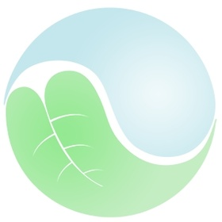
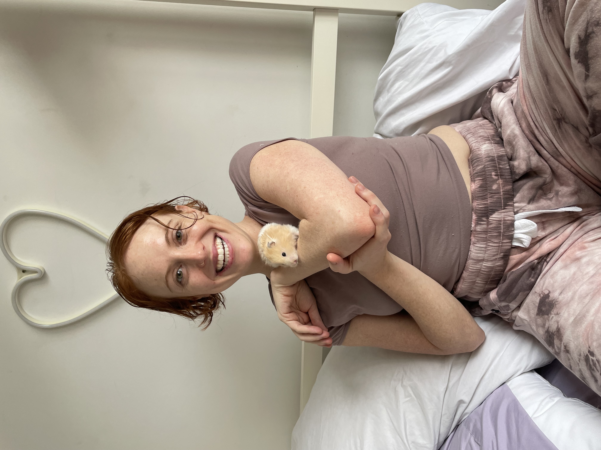
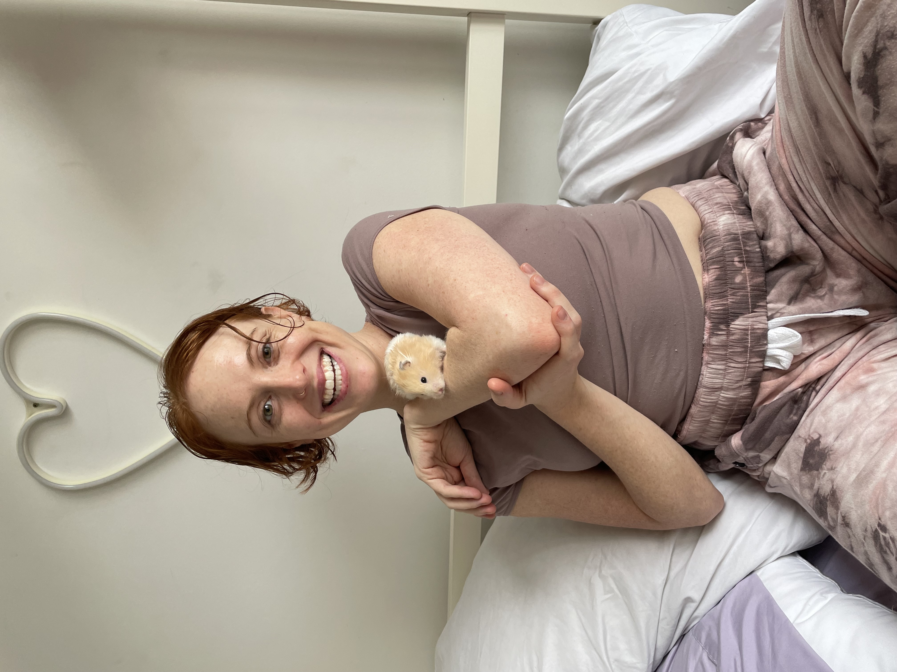
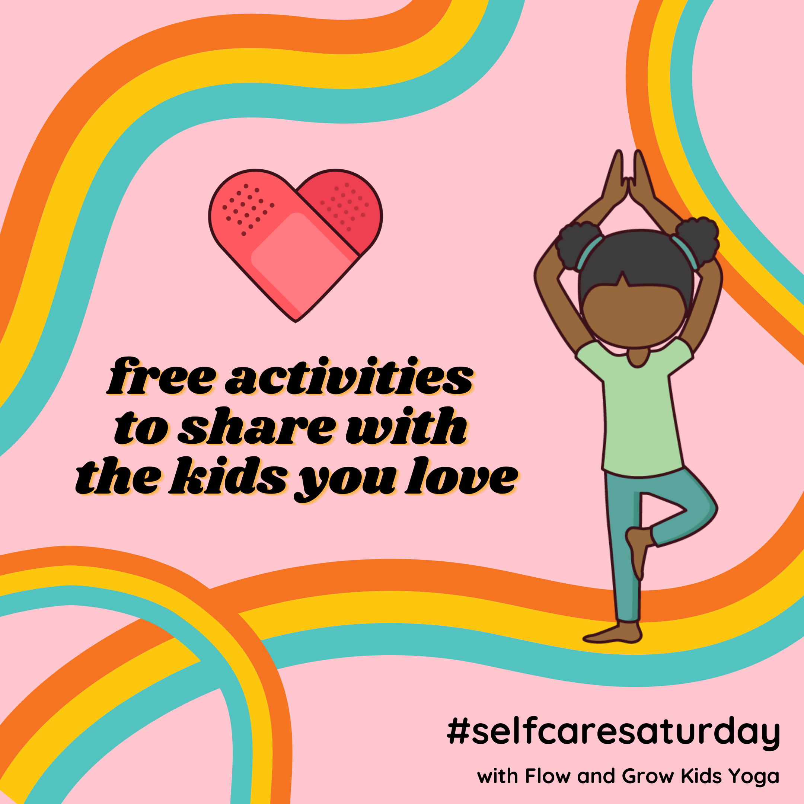
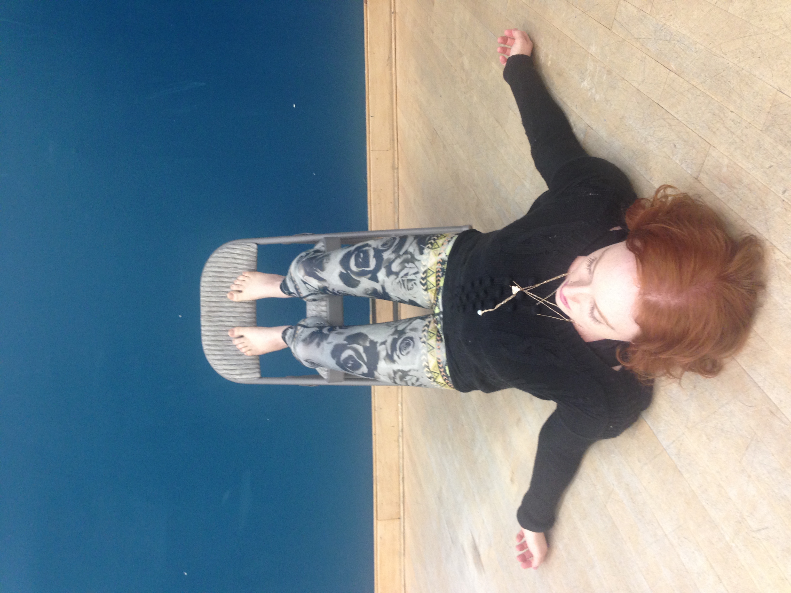
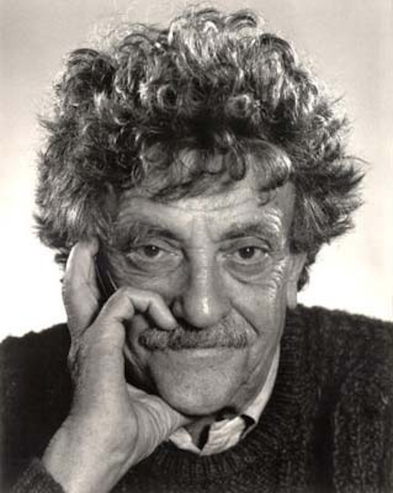
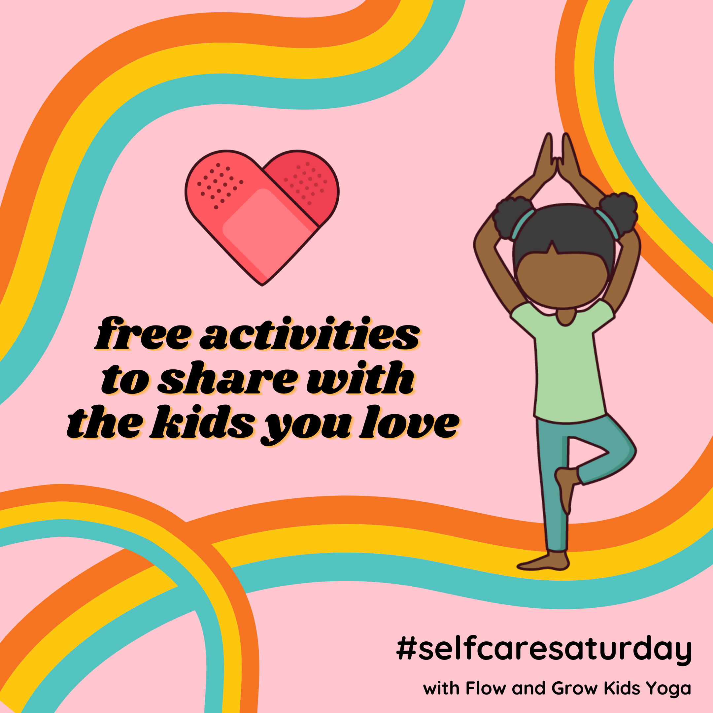
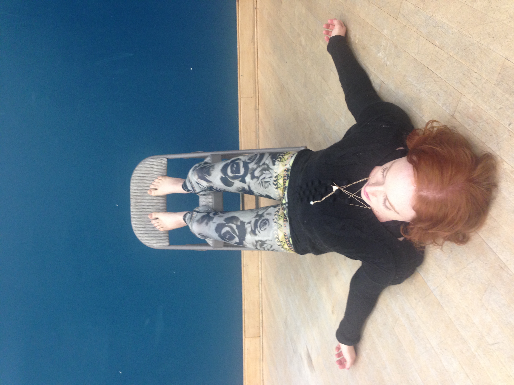
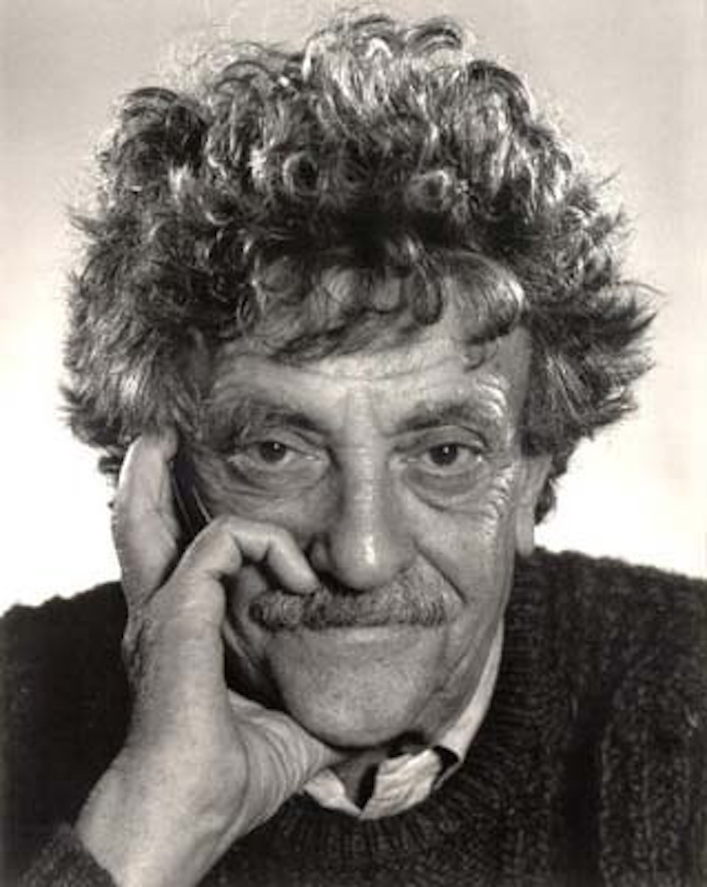

Software Engineer, Various Projects | 01/2022 - present
Some of my favorite accomplishments have been working on the projects and collaborations I have completed over the past 6 months in software development. From building a Kanye West quote game with JS, to building a health and wellness app steeped in scientific research in Ruby, to a full-stack multi-page web app with a complex dataset from an external API using Ruby on Rails backend and React.Js frontend, where I could track all the Vonnegut books I've read and favorite, take notes, and mark as read, it's been a blast. Most recently, I went down a React.JS rabbithole and built 7 classic features in a day including a timer, a tic tac toe game, mapping data and rendering it, and more. I am looking forward to supporting a team with these varied web development skills.
Founder, Flow and Grow Kids Yoga | 09/2012 - present
In 2012, I launched a community-based yoga and mindfulness education company. Over the next ten years, I expanded services to include professional development, teacher training, content sales(PDF sales of curriculum and children's education materials), a free prolific and award-winning blog, a multi-state and later multi-national career-track school, and ultimately to being one of the most sought out online teacher to cohort children's yoga schools, recognized by the Yoga Alliance as exceeding standards. At its peak, without ads, my eCommerce site had 5,000 unique monthly visitors. I hired more than 20 staff members including teaching artists, assistants, marketing AND AD AGENCIES, and a graphic designer that worked for me for 6 years. I trained more than 500 adults, mentored more than 35 adults, worked with over 50 schools, and taught more than 10,000 children.

Nonfiction Author, Subject Matter Expert | 05/2015-08/2021
Hired as a staff writer for Gaia, an online yoga and wellness media company to write as an expert on the topic of yoga philosophy, anatomy, and teaching principles from 2015-2018. In 2021, Then hired by Callisto Media to write two nonfiction books on the subject of mindfulness for beginners and mindfulness for children ages 5-7. In these positions I learned to work with an editor, to mind word count, to follow SEO and outlines, and to produce quickly for deadlines. SEO research and relevance played a major role in deciding topics and content length.
Lead Teacher, Pine Village Preschool | 08/2008 - 08/2011
Lead teacher at a Spanish Immersion preschool where I designed curriculum, taught 40 hours per week, spearheaded the afterschool program, and began a yoga and mindfulness program for the school. By my third year, I was a mentor teacher to potential and new hires. I created Spanish language songs for every occasion, using my creativity, writing, and social skills to make a warm learning environment for the community.
Yoga Instructor, Various organizations | 2012 - 2016
Community-based yoga teacher, offering prenatal, slow flow, vinyasa, and power yoga classes for adults through Inner Strength Studios (where I launched Flow and Grow Kids Yoga) from 2012 - 2015. I taught early childhood yoga all over the Boston area for My First Yoga from 2011 to 2015. I also contributed to many other community-based studios in both Boston and New York City areas.

 
 


   
  